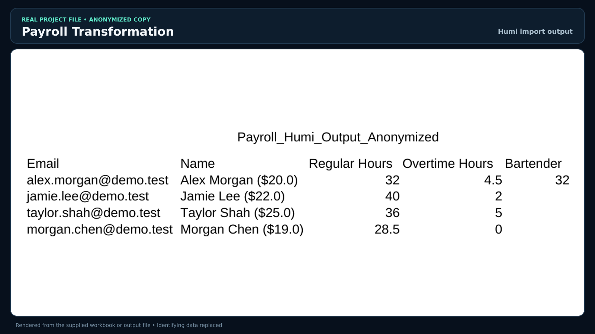

FINNOVATIVE · Built personally
Restaurant365 → Humi payroll processor
- Problem
- Payroll exports needed to fit a different system’s import structure.
- Solution and role
- An Excel/VBA processor matches employees and pay structures, transforms regular and overtime hours, and validates the output.
- Result
- A repeatable, import-ready payroll file with checks that remain visible to the user.
Excel · VBA · CSV validation
